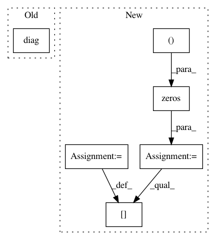

506b234094009d55d326f1ce957f53f15d4b65ee,geomstats/spd_matrices_space.py,,group_log,#Any#,52
Before Change
assert np.all(eigenvalues > 0)
diag_log = np.diag(np.log(eigenvalues))
log = np.dot(np.dot(vectors, diag_log), vectors.transpose())
return log
After Change
print("vectors")
print(vectors.shape)
assert np.all(eigenvalues > 0)
diag_log = np.zeros((n_sym_mats, mat_dim, mat_dim))
for i in range(n_sym_mats):
diag_log[i] = np.diag(np.log(eigenvalues[i]))
log = np.matmul(diag_log, np.transpose(vectors, axes=(0, 2, 1)))
log = np.matmul(vectors, log)
print("log")
In pattern: SUPERPATTERN
Frequency: 4
Non-data size: 6
Instances
Project Name: geomstats/geomstats
Commit Name: 506b234094009d55d326f1ce957f53f15d4b65ee
Time: 2018-02-26
Author: ninamio78@gmail.com
File Name: geomstats/spd_matrices_space.py
Class Name:
Method Name: group_log
Project Name: geomstats/geomstats
Commit Name: 506b234094009d55d326f1ce957f53f15d4b65ee
Time: 2018-02-26
Author: ninamio78@gmail.com
File Name: geomstats/spd_matrices_space.py
Class Name:
Method Name: group_exp
Project Name: geomstats/geomstats
Commit Name: 39c16df4d13f716bd6e1c4702e32890cb5944917
Time: 2020-11-19
Author: alice.le-brigant@enac.fr
File Name: geomstats/geometry/dirichlet_distributions.py
Class Name: DirichletMetric
Method Name: metric_matrix
Project Name: pymc-devs/pymc3
Commit Name: d6a2e55cea7640cf6ab1250bbaba66dd79a7ee85
Time: 2017-09-02
Author: maxim.v.kochurov@gmail.com
File Name: pymc3/theanof.py
Class Name: BatchedDiag
Method Name: perform